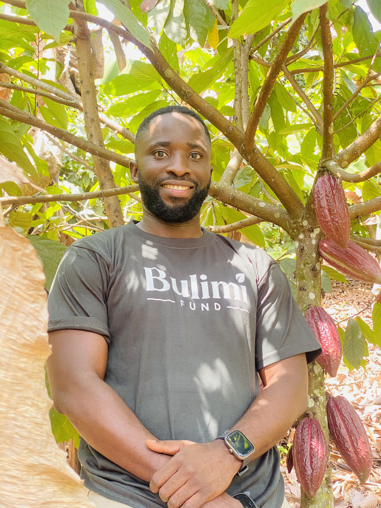
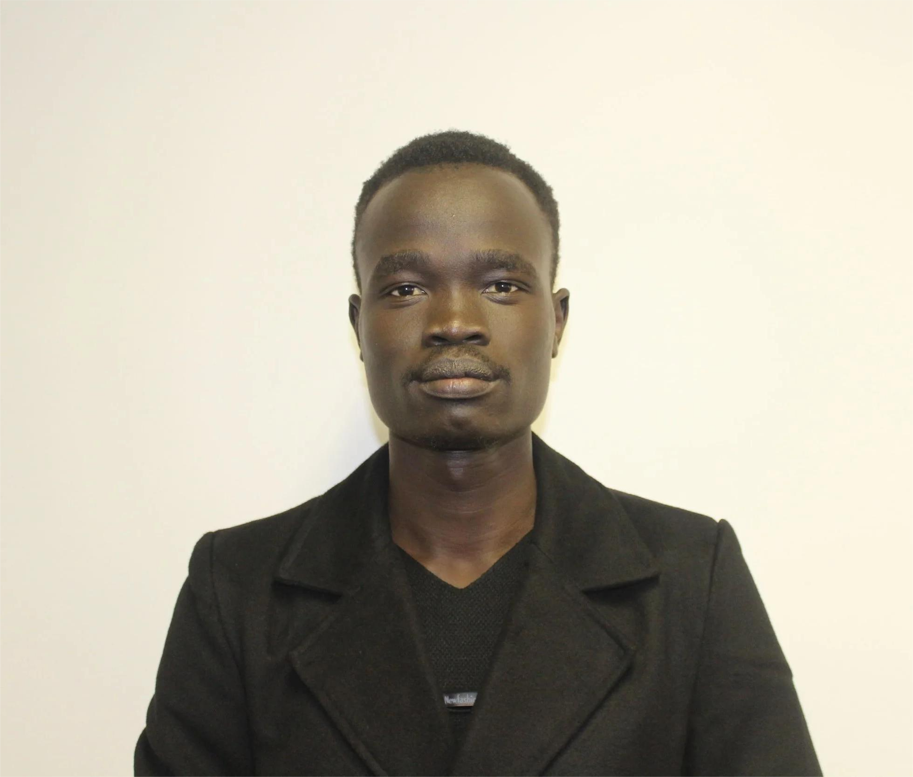
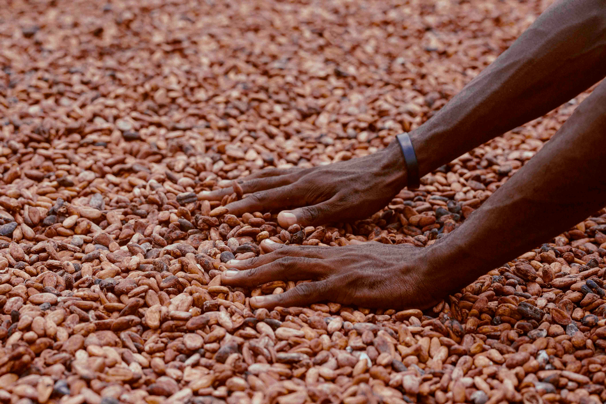

Bulimi began with a practical observation: rural farming families can create lasting value from their land, but new cash-crop opportunities often fail when farmers receive one-off inputs without the knowledge, field support or buyer relationships needed to succeed. Bulimi was created to close those gaps.
We are introducing organized cocoa production in new cocoa-growing areas, beginning in Kyenjojo District. Our role is not simply to distribute seedlings. We register and train farmers, guide garden establishment, manage nursery production, provide continuing extension, improve access to appropriate inputs and connect quality dried cocoa beans to exporters.
Bulimi is a Ugandan social enterprise established to improve smallholder farmers' production, livelihoods, market access and financial inclusion through cocoa. Bulimi supports farmers from registration and training to garden establishment, extension, access to quality planting material and inputs, and the sale of dried cocoa beans.
Bulimi's first pilot is planned for selected communities in Kyenjojo District. Expansion to neighbouring districts — including Kabarole, Kamwenge and Ibanda — will follow only after evidence from the pilot, local engagement, land suitability and operational capacity support responsible growth.
To equip and organize smallholder farmers to establish productive, responsible cocoa farms and access reliable markets, affordable inputs and fairer income opportunities.
Prosperous farming families participating confidently in a transparent, inclusive and sustainable cocoa economy.
Farmers are partners and business owners, not passive beneficiaries.
Clear communication, accountable records and honest market relationships.
Field-level services designed around what farmers need to succeed.
Responsible land use, soil health, safe inputs and long-term farm productivity.
Meaningful opportunity for women, young people and underserved farming households.
Coordinating farmers, buyers, communities, government and supporters around shared value.
Cocoa is a long-term perennial crop with the potential to diversify household income and connect smallholder farmers to established regional and international value chains. That opportunity must be developed carefully: with suitable land, healthy planting material, shade and soil management, disciplined farm care, quality post-harvest handling and credible markets.
We will build with farmers, measure honestly, protect people and land, and strengthen market relationships that reward quality and consistency.
Richard is an executive leader with over seven years of experience in strategic planning, investment management, and business development. An MBA graduate from the Uganda Management Institute, he drives the organisation's strategic vision and sustainable growth.
LinkedIn
John is a dynamic communications professional who oversees operations, stakeholder engagement, and impact reporting across Africa. A graduate in Entrepreneurial Leadership from the African Leadership University and a current MA candidate in Communications and Media at Sciences Po, he also manages corporate communications and strategic partnerships at Bulimi.
LinkedInOversees daily operational workflows, scales internal infrastructure, and ensures cross-functional alignment. Brings deep operational expertise to optimise organisational efficiency and execute strategic objectives.
LinkedInLeads the technological roadmap, product development, and engineering infrastructure. Focuses on building scalable tech solutions to drive digital transformation across Bulimi's operations.
LinkedInManages marketing strategy, brand positioning, and user acquisition campaigns. Leverages data-driven insights to expand market reach and strengthen regional stakeholder engagement.
LinkedIn
Bulimi combines social purpose with a market-based operating model. Farmer training, establishment support and early-stage services create long-term livelihood assets. Aggregating and marketing quality cocoa builds a commercial pathway that can help sustain services as production grows. Donations and partnerships help finance the intensive establishment years before cocoa generates meaningful income.